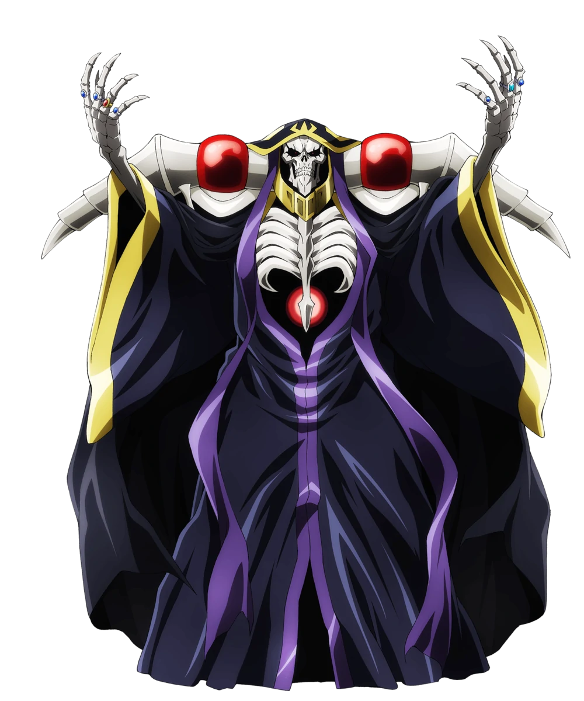
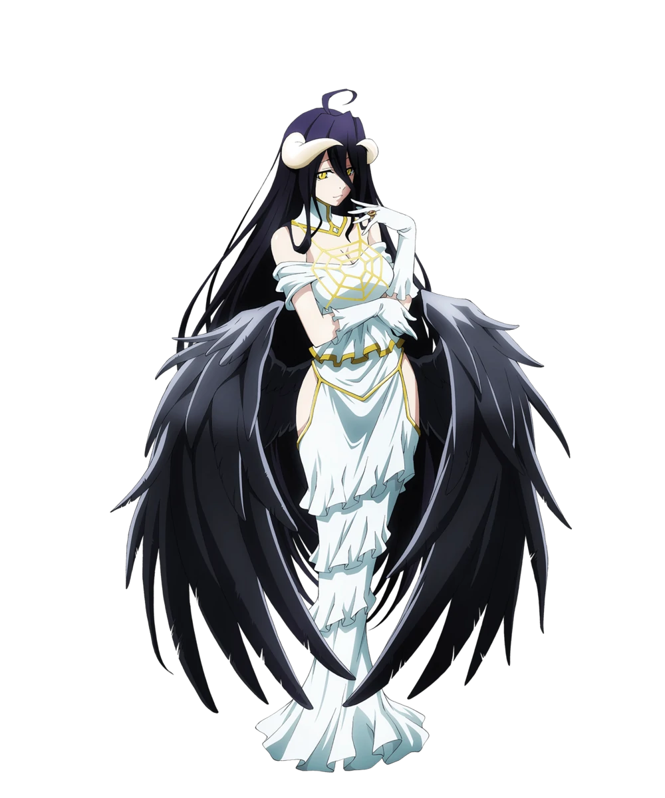
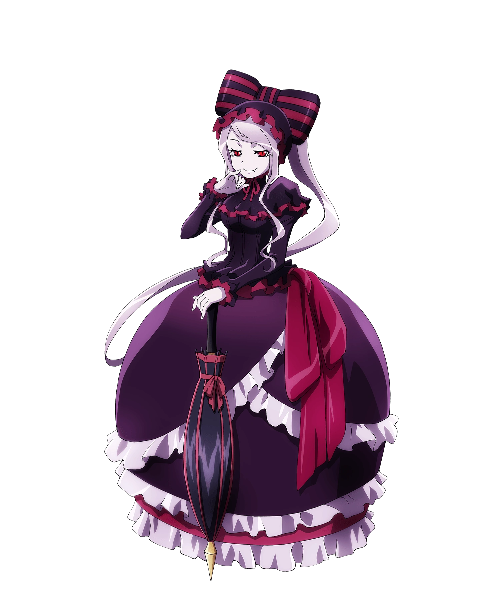
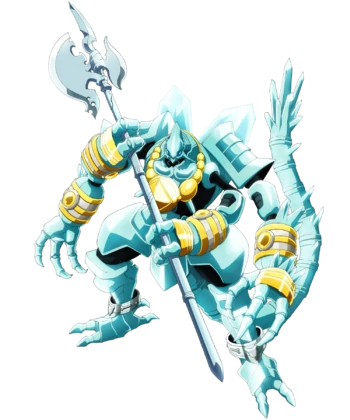
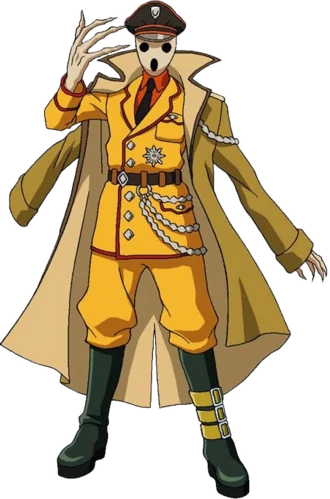

-
Ainz Ooal Gown
HP 1000
Description
Ainz Ooal Gown, formerly known as Momonga, is the main protagonist of the Overlord series. He is the guildmaster of Ainz Ooal Gown, Overlord of the Great Tomb of Nazarick, and the creator of Pandora's Actor. He is regarded as the highest of the Almighty Forty-One Supreme Beings by the NPCs of Nazarick..
-
Albedo
HP 1400
Description
Albedo is the Overseer of the Guardians of the Great Tomb of Nazarick. She is in charge of the general management and supervision of the activities done by the seven Floor Guardians, meaning that she ranks above the other NPCs in Nazarick. She is the middle sister of the older sister Nigredo and younger sister Rubedo. Along with her sisters, she was created by Tabula Smaragdina.
-
Shalltear Blood.
HP 1800
Description
Shalltear Bloodfallen is a true vampire and the Floor Guardian of the first to third floors in the Great Tomb of Nazarick. She was created by Peroroncino.
-
Cocytus
HP 5000
Description
Cocytus is a Floor Guardian of the 5th Floor in the Great Tomb of Nazarick. He is the creation of Warrior Takemikazuchi.
-
Pandora's Actor
HP 1200
Description
Pandora's Actor is an Area Guardian of the Treasury and the financial manager of Nazarick. He is responsible for the upkeep of Nazarick and Ainz Ooal Gown. He was created by Momonga himself.